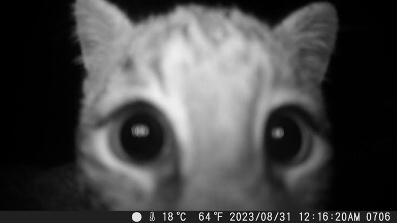

¡Mi bolita de pelos fashionista! Miren a este bombón, este es mi pequeño Sherlock Homes, pero en versión felina. ¿No es para comérselo? Estos lentecitos le dan un aire de intelectual, ¡como si estuviera a punto de resolver el misterio de dónde escondí sus galletas favoritas!
¡Mi bolita de pelos fashionista! Miren a este bombón, este es mi pequeño Sherlock Homes, pero en versión felina. ¿No es para comérselo? Estos lentecitos le dan un aire de intelectual, ¡como si estuviera a punto de resolver el misterio de dónde escondí sus galletas favoritas!
Con esas gafas parece que estuviera estudiando para ser el próximo premio Nobel de la gatitud. Pero no se dejen engañar, detrás de esa mirada seria hay un corazón de trapo dispuesto a ronronearte hasta el infinito. ¡Es mi gatito más listo, guapo y achuchable del mundo! ¿A poco no le dan ganas de apapacharlo y darle un montón de besitos en su naricita? ¡Lo amo con todo mi corazón! Es mi pequeño genio, mi compañero de aventuras... ¡y el rey absoluto de la siesta!

Saluden! >w<.
¡Ay, Dios mío, este demonio con pelaje otra vez! Miren nada más, captado en flagrancia por la cámara de seguridad. ¿Ven esa sombra que se mueve con sigilo? ¡Ese es mi "angelito"!
Aparentemente, a las 3 de la mañana, mi adorado Pelusa decidió que era el momento perfecto para un nuevo deporte olímpico: el "Salto con obstáculos sobre la mesa del comedor". Veo ahí cómo tumba el frutero... ¡otra vez! Y la lámpara, ¡ay, la lámpara que tanto me gustaba! Pensé que la había puesto fuera de su alcance, pero nada detiene a este ninja felino

Meow.
 Ahí está, el ladrón oficial de gorras. Miren a este tipo, mi "gato", usando mi gorra favorita como si fuera suya. No sé por qué le gusta tanto, quizás porque huele a mí, o quizás porque piensa que lo hace ver más interesante, y para ser honesto, no se ve mal.
Ahí está, el ladrón oficial de gorras. Miren a este tipo, mi "gato", usando mi gorra favorita como si fuera suya. No sé por qué le gusta tanto, quizás porque huele a mí, o quizás porque piensa que lo hace ver más interesante, y para ser honesto, no se ve mal.
Normalmente me enojaría, pero ¿cómo regañas a esa cara? Parece un rapero de los 90 listo para lanzar su mixtape. Y mírenlo, cómodamente acurrucado en el sofá con la gorra cubriéndole los ojos, tomando una siesta sin remordimiento alguno.